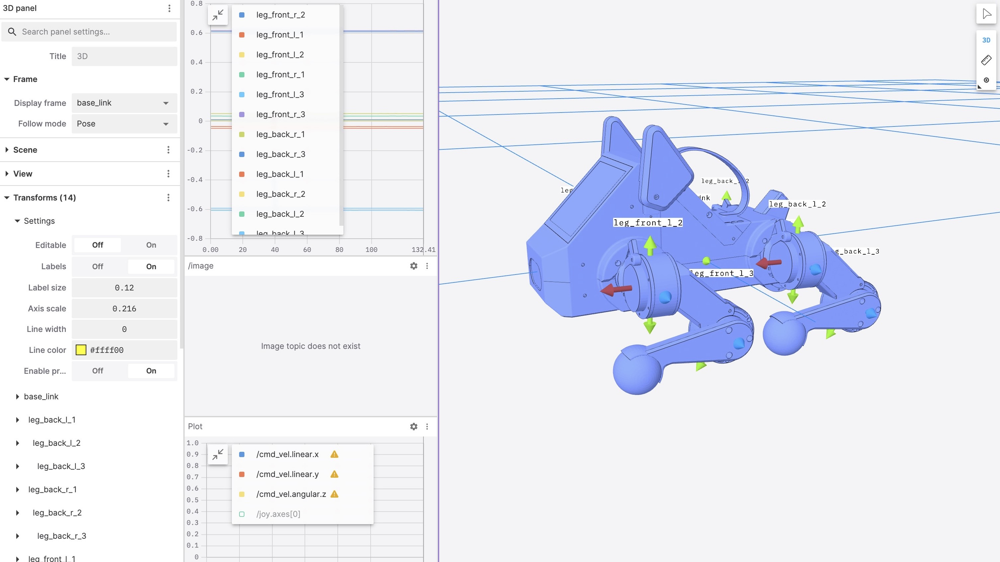

Design: MediQuad Healthcare Architecture
MediQuad consists of three main modules optimized for healthcare environments: Upper module (perception & patient interaction), Middle module (control & navigation), and Lower module (locomotion & stability). MediQuad can be assembled easily through a modular design where each leg assembly can be independently constructed and integrated without requiring permanent fasteners between modules.
Upper Module (Perception & Patient Interaction Layer)
The Upper module forms the healthcare sensor hub mounted on a medical-grade aluminum chassis measuring 120mm × 100mm × 80mm, which serves as the primary reference frame for all patient-facing sensors and communication systems through four corner mounting points with M3 threaded inserts enabling tool-free assembly. The Raspberry Pi 5 central processor is mounted directly on this chassis via thermal interface pad, featuring dual 4-core CPU clusters operating at 2.4 GHz that provide real-time computation for patient monitoring algorithms, environmental mapping, and voice interaction processing. The processor handles real-time patient vital sign analysis, autonomous navigation pathfinding, voice command recognition, and multi-sensor data fusion at 100 Hz update rate with total computational latency remaining below 10 milliseconds from sensor input to actuator response. The system contains 8GB LPDDR5 RAM, enabling simultaneous execution of navigation, patient monitoring, and telemedicine streaming without performance degradation.
The Luxonis SR depth camera is mounted on an upper forward-facing bracket with 87-degree field of view, featuring a stereo pair infrared projector and dual RGB-D sensors that output 1280×720 depth maps at 30 frames per second with accuracy of ±5 centimeters at 1-3 meter range optimal for patient distance monitoring and fall detection. This camera connects via USB 3.1 interface to the Raspberry Pi at 480 Mbps bandwidth and performs real-time obstacle detection for safe navigation around patients and medical equipment, terrain classification for adapting gait on different hospital floor surfaces, and doorway detection for autonomous room-to-room navigation while consuming only 2.5 watts average power. The thermal imaging camera array consists of a medical-grade infrared sensor with 80×60 pixel resolution capable of detecting temperature differences of 0.1 degrees Celsius at 2-meter distance, enabling non-contact patient temperature screening, hotspot detection for inflammation monitoring, and occupancy detection for patient presence verification.
The microphone array consists of quad MEMS microphones arranged in beamforming pattern with 50-millimeter separation for directional audio acquisition with ±30-degree accuracy, incorporating medical-grade background noise suppression via hardware audio codec compliant with hospital ambient noise standards, and enabling voice commands for navigation control, patient communication for medication reminders and vital sign queries, and emergency alert detection through voice stress analysis when integrated with cloud AI services. The 3.5-inch medical-grade LCD touchscreen displays real-time system status including current patient interaction mode, battery level with time-to-charging estimate, navigation destination and progress, active monitoring alerts, and telemedicine video call interface, connecting via HDMI interface to the Raspberry Pi with antimicrobial coating rated for 1,000 cleaning cycles with hospital-grade disinfectants.
The Upper module receives 12-volt regulated medical-grade power supply from the Middle module battery system, with isolated DC-DC converters stepping down voltage to 5 volts for the Raspberry Pi and 3.3 volts for sensors ensuring patient electrical safety, resulting in total upper module power draw of approximately 18 watts average during active patient monitoring. The aluminum chassis acts as passive heat sink for the Raspberry Pi through a 3 watt per meter-kelvin thermal interface pad, maintaining operating temperatures between -10°C and +50°C with automatic thermal throttling engaged at processor temperatures exceeding 85 degrees Celsius, ensuring reliable operation in varying hospital environmental conditions.
Middle Module (Control & Navigation Layer)
The Middle module serves as the healthcare automation control center, housed in a medical-grade cylindrical aluminum enclosure with 85-millimeter diameter and 120-millimeter height that bolts directly beneath the Upper module via four M4 fastener bosses with vibration-damping rubber isolators. This module connects Upper module patient sensing to Lower module locomotion through a distributed control architecture with three primary communication buses: the CAN bus for primary motor control ensuring deterministic real-time response, the I2C bus for sensor data collection from environmental monitors, and UART serial for IMU real-time streaming essential for stability control during patient interaction.
The CAN bus operates at 1 megabit per second baud rate with medical-grade electromagnetic compatibility ensuring no interference with hospital medical equipment, enabling deterministic real-time communication between the Raspberry Pi and all 12 motor controllers organized into four groups corresponding to each leg for coordinated smooth motion near patients. Front-left leg motors have IDs 0x11, 0x12, and 0x13 for hip, thigh, and shin respectively, front-right leg motors are 0x21, 0x22, and 0x23, rear-left leg motors are 0x31, 0x32, and 0x33, and rear-right leg motors are 0x41, 0x42, and 0x43 enabling individual motor health monitoring. Each command frame transmitted from Raspberry Pi to motor contains a 64-bit payload with target position in 16 bits for precise placement, velocity in 16 bits for smooth acceleration profiles, torque limit in 16 bits for patient safety constraints, control mode in 8 bits enabling force-limited operation, and reserved bits in 8 bits for future healthcare-specific features, while feedback frames returning from motors to Raspberry Pi contain actual position in 16 bits, actual velocity in 16 bits, motor temperature in 8 bits for predictive maintenance, error flags in 8 bits for fault detection, and load percentage in 8 bits for collision detection. Messages transmit at 100 hertz frequency with 10-millisecond intervals using round-robin scheduling across all 12 motors, resulting in approximately 60 percent CAN bus utilization that provides sufficient headroom for additional patient monitoring sensors. Latency from command transmission to motor response remains below 5 milliseconds, ensuring tight synchronization essential for smooth motion that won't disturb patients or create safety hazards.
Each motor controller interfaces through dedicated brushless motor controller hardware featuring 3-phase gate driver for 400-watt brushless motor commutation with smooth torque delivery, integrated current sensing with ±50 ampere measurement range and 0.1 ampere resolution for load monitoring, temperature sensor on motor windings with automatic derating at elevated temperatures, position feedback integration from motor encoder with sub-degree accuracy, closed-loop PID control at 10 kilohertz internal loop frequency for vibration-free operation, and CAN transceiver with automatic error recovery and health status reporting for predictive maintenance in healthcare operations.
The inverse kinematics computation engine resides on the Raspberry Pi in the Middle module software stack and performs mathematical operations for all four legs simultaneously with safety-verified bounds checking. Given joint angles theta-1, theta-2, and theta-3, the forward kinematics computation calculates foot Cartesian position using hip joint position offset determined by theta-1 abduction angle, with thigh and shin link lengths of 85 millimeters and 90 millimeters respectively optimized for hospital floor-to-counter height reach, and foot position determined by trigonometric relationships: x = L₁·sin(θ₁)·cos(θ₂) + L₂·cos(θ₁)·cos(θ₂+θ₃) verified against workspace safety bounds. The inverse problem, given desired foot position in Cartesian coordinates validated against patient proximity constraints, solves for required joint angles where theta-1 equals arctangent of x over y for hip abduction angle, distance to foot is calculated as square root of x-squared plus y-squared, thigh-shin angle is solved using law of cosines with the constraint that L₁² + L₂² + 2·L₁·L₂·cos(θ₃) equals distance-squared, and theta-2 and theta-3 are solved using closed-form algebraic solution enabling computation in less than one millisecond per leg ensuring real-time response to patient proximity. All four legs run in parallel on the multi-core Raspberry Pi, requiring only 1 millisecond total computation per 100-hertz control cycle, leaving 9 milliseconds margin for patient monitoring algorithms and communication tasks.
The IMU integrates a medical-grade 6-axis inertial measurement unit featuring 3-axis accelerometer and 3-axis gyroscope with accelerometer range of ±16g at 0.488 milligravity resolution for fall detection sensitivity and gyroscope range of ±2000 degrees per second at 0.06 degree per second resolution for stability monitoring. The sensor samples internally at 200 hertz and streams at 100 hertz to the Raspberry Pi via I2C interface at 400 kilohertz bus speed with low-pass filter providing 3-decibel cutoff at 42 hertz to reduce high-frequency noise while preserving patient interaction event detection. Real-time pitch and roll calculation utilizes complementary filter that fuses accelerometer and gyroscope data for accurate body orientation, detects body tilt exceeding ±30 degrees to trigger stability recovery gaits preventing tip-over near patients, integrates yaw rate rotation about vertical axis for smooth turning in narrow hospital corridors, and maintains sensor data latency below 15 milliseconds from sensor to stabilization control loop ensuring safe operation around patients and medical equipment.
The battery management system uses medical-grade 6S LiPo chemistry providing 22.2 volts nominal output with 20 volts minimum and 25.2 volts maximum within hospital electrical safety standards, contains 6000 milliamp-hour capacity totaling 133 watt-hours energy enabling full shift operation, features 50C continuous discharge rating supporting 300 ampere peak capability for emergency maneuvers, and includes integrated BMS with ±0.05 volt cell voltage balance tolerance and automatic safety cutoff. Power distribution provides 12-volt isolated output via medical-grade buck converter that steps 24 volts input down to 12 volts at 35 ampere capacity with 94 percent efficiency reducing heat generation, with real-time monitoring of voltage, current, and remaining capacity via I2C BMS interface enabling predictive charging scheduling. Onboard charging accepts 5 ampere input at 6S with automatic cutoff at full charge and hospital-grade electrical isolation, providing approximately 4 hours continuous operation at typical hospital navigation speed of 0.2 meters per second with patient monitoring active. The power budget allocates 120 watts to motors during stance phase peak, 18 watts to Raspberry Pi and sensors during active patient monitoring, 10 watts to motor controllers and CAN bus, and 2 watts to battery management overhead, with automatic power mode switching to extend runtime during standby periods.
Three-stage power distribution ensures medical-grade electrical safety and clean power delivery: the input stage accepts 6S LiPo battery at 22.2 volts nominal through 1000-microfarad electrolytic capacitor bank for surge suppression and transient filtering; the primary conversion stage uses isolated buck converter with medical-grade creepage and clearance to step 24 volts down to 12 volts at 35 amperes for motor system and Middle module ensuring patient electrical safety; and secondary conversions generate 5 volts at 3 amperes for Raspberry Pi core with input-output isolation, 3.3 volts at 2 amperes for sensor analog supply with low-noise regulation, and 5 volts at 2 amperes for USB peripherals with overcurrent protection. Motor controllers dissipate average 10 watts during hospital navigation, approximately 0.83 watts per controller, while the aluminum enclosure provides passive cooling to ambient with internal airflow from Lower module leg motion providing convection cooling and temperature monitoring on all controllers with thermal throttling engaged at controller temperatures exceeding 95 degrees Celsius, ensuring reliable operation during extended patient monitoring shifts.
Lower Module (Locomotion & Stability System)
The Lower module forms the physical mobility platform optimized for safe operation in healthcare environments, consisting of a rigid body frame with four independent leg assemblies constructed from central carbon fiber plate of 3-millimeter thickness measuring 200mm × 150mm that serves as rigid body reference and force distribution point with antimicrobial coating rated for hospital disinfection protocols. Two aluminum side rails made from medical-grade 6061-T6 aluminum with 2-millimeter thickness and 80-millimeter height provide lateral bracing and motor mounting points with smooth surfaces for easy cleaning, while four leg attachment points at corners feature ±20-degree adjustable mounting brackets enabling stance width tuning for different floor surface types and patient clearance requirements. The overall chassis mass is 950 grams, providing sufficient inertia for stable operation and gentle patient interaction.
Each of the four independent leg assemblies contains three degrees of freedom per leg optimized for hospital floor navigation and stair climbing, with the hip abduction/adduction joint featuring a GIM4305 brushless motor producing 16 newton-meters continuous torque at 400 watts peak power using direct drive transmission with no gearbox eliminating mechanical noise, supported by two sealed ball bearings measuring 6×13×5 millimeters that support radial loads and protect against fluid ingress. This joint provides ±45 degrees range of motion from center position with 16-bit absolute position encoder on motor shaft for precise foot placement, controlling leg inward/outward movement relative to body enabling narrow corridor navigation. The hip flexion/extension thigh motor uses identical GIM4305 brushless motor with direct drive transmission connected via 85-millimeter rigid carbon fiber strut link with antimicrobial coating and two sealed ball bearings at hip-thigh junction, providing -90 to +45 degrees range of motion for forward/backward swinging with 16-bit absolute position feedback enabling adaptive stride length. The ankle flexion/extension shin motor similarly uses GIM4305 brushless motor with 90-millimeter rigid carbon fiber strut link with antimicrobial coating connected via one sealed ball bearing at thigh-shin junction, providing -70 to +50 degrees range of motion for foot pitch control with 16-bit absolute position feedback enabling terrain adaptation and stair climbing.
The foot assembly consists of 50mm × 40mm medical-grade elastomer pad with shore hardness 60A providing quiet operation and floor-safe traction containing integrated force sensor measuring vertical load with ±300 newton range for patient collision detection, adhesively bonded to aluminum foot plate with antimicrobial coating for integrated assembly, providing coefficient of friction approximately 0.7 on typical hospital flooring including linoleum, tile, and sealed concrete. The four-leg kinematic arrangement positions hip abduction angles at ±20 degrees creating 40-millimeter track width at ground contact optimized for stability, front legs positioned 30 millimeters forward of body centerline and rear legs positioned 30 millimeters behind body centerline, creating rectangular support polygon measuring 200mm × 140mm for stable tripod gait essential for safe patient proximity operation. The center of mass is located 15 millimeters above chassis plane due to motor placement with vertical center of mass at 130 millimeters above ground during standing posture and horizontal center of mass centered within support polygon for static stability preventing tip-over during patient interaction.
During standing rest with all four legs on ground providing uniform weight distribution suitable for stationary patient monitoring, body mass of 3.5 kilograms produces gravitational force of 35 newtons distributed as 8.75 newtons per leg. During slow walking gait optimized for hospital environments with two-leg stance using diagonal leg pairs in contact for maximum stability, each stance phase duty cycle reaches 60 percent with each leg supporting body mass 60 percent of gait cycle, generating peak vertical reaction force per stance leg of 14 newtons with shear force up to 7 newtons during gentle acceleration suitable for patient proximity. Motor torque requirement at hip and thigh joints reaches 10 newton-meters maximum at 0.2 meters per second hospital navigation speed optimized for safe operation near patients and medical equipment.
The carbon fiber link structures use 3K twill weave composite with antimicrobial resin system featuring 16-millimeter hollow tubes with 1.5-millimeter wall thickness, providing tensile strength exceeding 600 megapascals and Young's modulus of 230 gigapascals creating extremely stiff structure that minimizes deflection under load ensuring precise foot placement. Each leg masses 90 grams with four motors totaling 1.3 kilograms and four links totaling 0.36 kilograms, and maximum load deflection remains below 0.2 millimeters at 14 newtons, creating negligible impact on inverse kinematics accuracy essential for safe navigation. Aluminum foot plates use medical-grade 6061-T6 aluminum at 2-millimeter thickness with antimicrobial coating and adhesive bonding to elastomer foot pad providing shear bond strength exceeding 10 megapascals, while load cell mounting integrates strain gauge bridges in full Wheatstone bridge configuration with medical-grade biocompatible encapsulation.
Each of the 12 motors includes absolute rotary encoder with 16-bit resolution yielding 65,536 counts per revolution, position accuracy of ±0.0055 degrees or 0.00009 radians for precise foot placement near patients, update rate of 100 hertz via CAN bus, enabling closed-loop control to eliminate dead-band and positioning error. This redundant encoder system means if one encoder fails, neighboring leg can infer failed leg state from body dynamics enabling safe degraded-mode operation to return to charging station. During stance phase lasting 0.6 seconds at 0.2 meters per second hospital walking velocity optimized for patient safety, legs in contact with ground move backward relative to body at velocity negative-v, while ground reaction forces propel body forward at velocity positive-v with force balance maintained at zero net force during steady-state walking. During swing phase, legs lift off and swing forward to reset position with swing distance exactly matching stance distance to maintain cyclic repetition, with trajectory controlled by inverse kinematics to avoid collision with medical equipment and maintain minimum 5-centimeter ground clearance. The total available motor torque equals 12 motors multiplied by 16 newton-meters per motor equaling 192 newton-meters total, with 8 motors active in stance phase and 4 motors in swing phase during walking gait, prioritizing torque allocation to stance phase motors for stable load-bearing during patient interaction. Static stability is maintained when at least 3 legs remain in contact with ground creating tripod stability essential for safe patient proximity operation, center of mass projects within support polygon boundary, and body pitch and roll angles remain within IMU threshold limits of ±25 degrees for hospital operation. Force sensors in foot pads detect ground reaction forces including vertical component for weight distribution, horizontal forward-back component for traction monitoring, and horizontal lateral component for slip detection, enabling real-time stance phase detection without proprioceptive ambiguity, load distribution monitoring across all four legs for balanced operation, and adaptive ground compliance for uneven surfaces including door thresholds and floor transitions. Motor encoder feedback creates closed-loop control at 100 hertz control frequency, minimizing desired position versus actual position error continuously to reduce energy waste from overshoot and provide smooth gentle motion suitable for patient comfort, while CAN bus synchronizes all 12 motors with latency below 5 milliseconds ensuring coordinated smooth gait.